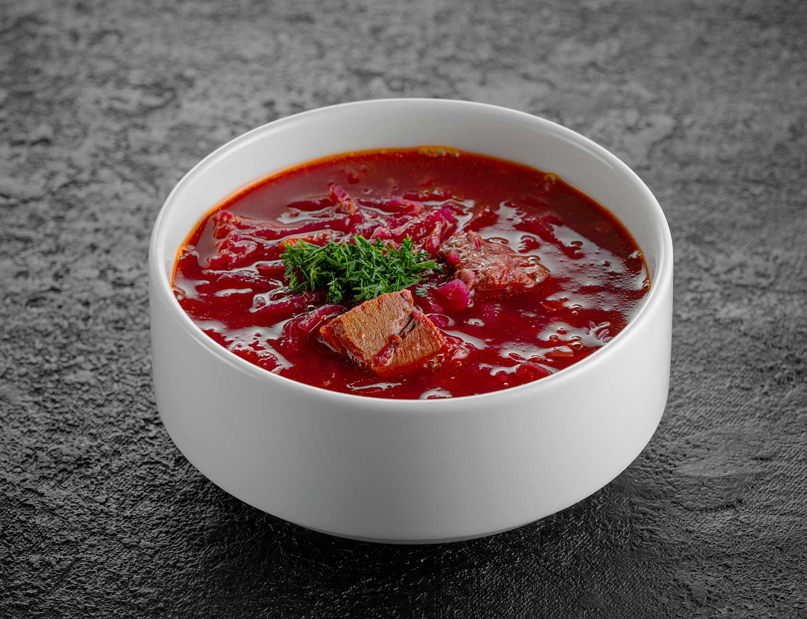

Cooking Store
На главную страницу

Ингридиенты
1. Мясо для бульона — 400–450 г (говядина, свинина, курица).
2. Картофель — 4 шт.
3. Луковица — 1 шт.
4. Морковь — 1 шт.
5. Свекла — 3 шт.
6. Капуста — 1/3–1/2 шт.
7. Чеснок — 2–3 зубчика.
8. Томатная паста — 2 ст. л.
9. Уксус — 1 ст. л.
10. Соль, перец, растительное масло — по вкусу.
11. Вода — 3–4 л.
12. Лавровый лист — 1 шт.
Процесс приготовления
Посмотрите обучабщее видео или
следуйте инструкции ниже
Рецепт
1. Подготовьте мясо, обрежьте его от лишних жиров и костей. Затем нарежьте его на небольшие кусочки.
2. В большой кастрюле налейте воду и добавьте мясо. Доведите до кипения, затем
уменьшите огонь и варите на среднем огне около 30–40 минут, пока мясо не станет мягким и бульон не насыщен вкусом.
3. В это время очистите и нарежьте картофель кубиками.
4. Мелко нарежьте лук и чеснок.
5. Натрите морковь на терке, а свеклу нарежьте кубиками.
6. Когда мясо станет мягким, добавьте в кастрюлю картофель и варите еще 10 минут.
7. В сковороде разогрейте растительное масло и обжарьте на нем лук с чесноком до золотистого цвета.
8. Добавьте в сковороду морковь и свеклу, обжаривайте все вместе около 5 минут.
9. Затем добавьте томатную пасту и обжаривайте еще 2–3 минуты.
10. Переложите обжаренные овощи в кастрюлю с бульоном и мясом.
11. Добавьте нарезанную капусту и лавровый лист.
12. Доведите борщ до кипения и варите на среднем огне около 15–20 минут, пока все овощи не станут мягкими.
13. Посолите и поперчите по вкусу. Добавьте уксус для придания кислоты.
14. Подавайте горячий борщ с сметаной и свежим зеленым луком. Приятного аппетита!